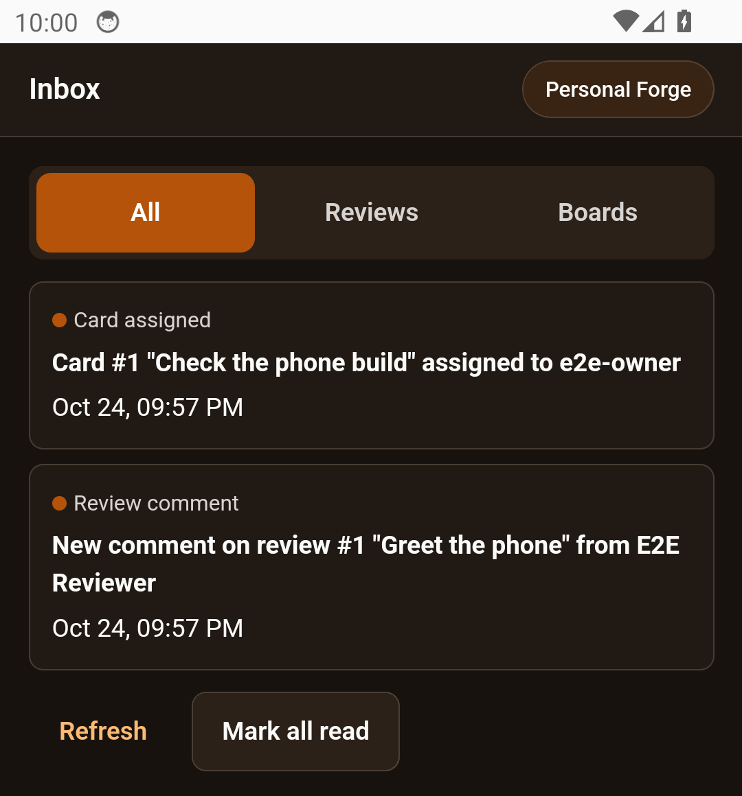
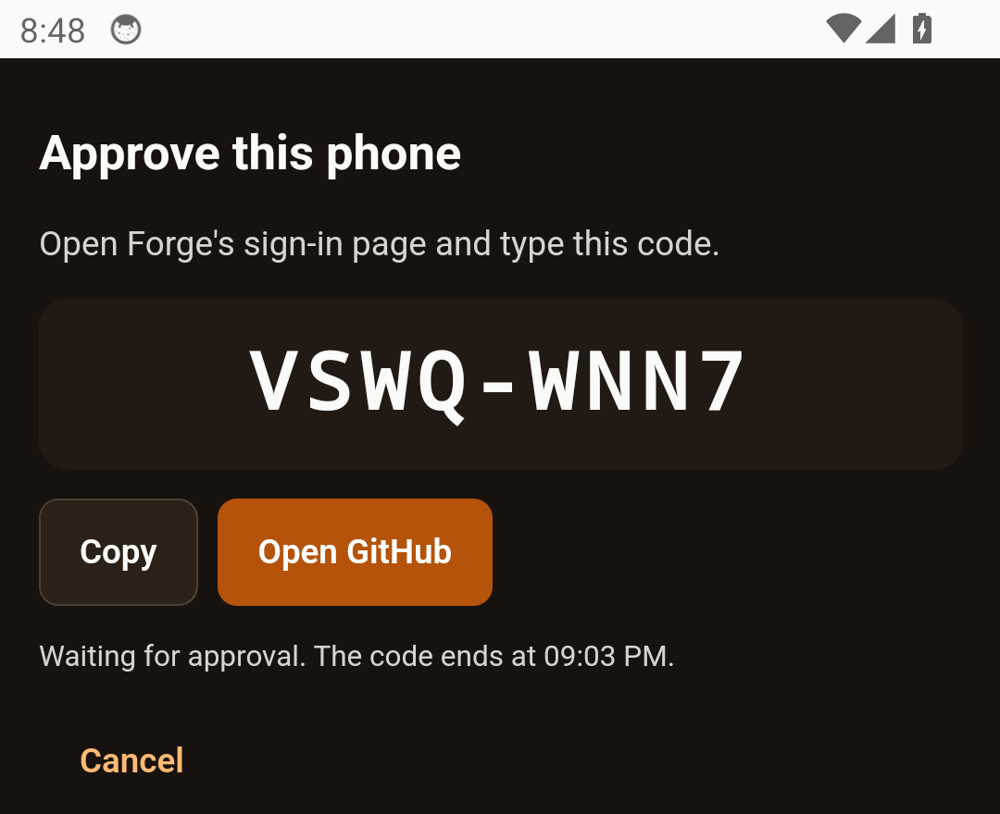
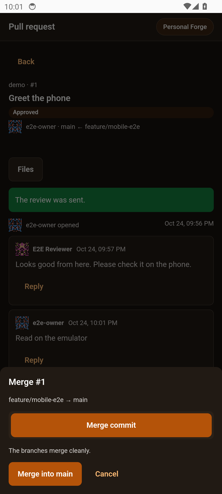
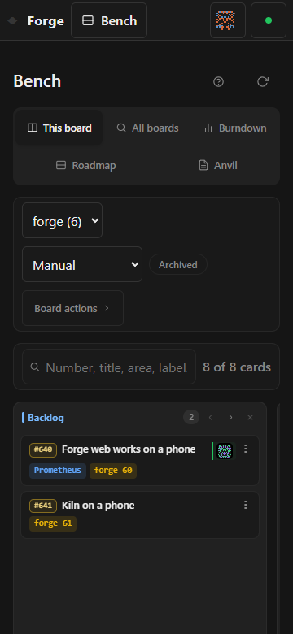

Forge in my pocket, and scenes that forget nothing
Contents
Two days ago the phone app was nineteen drawings in Figma. Last night it signed in to my Forge, read a pull request, left a comment, approved it and merged it, all on an Android emulator. Along the way Forge learned to push updates as they happen, and I spent part of the day on something less flashy that matters more for the game: making sure a scene can't quietly lose data.
The phone app is real


The app is a small React project wrapped with Capacitor, so it shares DD-ReForged's colours and components with the desktop app instead of copying them. It does what the drawings said it would:
- Sign in. Personal Forge signs in with a code, like the desktop apps. The phone shows a short code, you approve it on Forge, and you're in.
- Inbox. Review requests, comments, approvals, merges and card changes, each one tapping through to what it's about.
- Pull requests. The list, the details, the changed files and each diff, plus comment, approve and merge.
- Branches. The remote branches, and merging one branch into another on the server.
- Boards. View a board, move a card, comment on it. Docs are read-only for now.
- Settings. Accounts, an app lock, and the avatar editor.


The first Android build ran on a headless emulator. Then I ran the whole thing end to end against a scratch Forge: sign in, read the inbox, open a board, move a card, comment, open a pull request, read the diff, approve and merge. Forge's own records agreed with what the phone said had happened.


Personal Forge lives on my PC at home, so the phone talks to it over the home network. I decided plain http is fine there for now. Forge only listens on the network if you turn that on, and it can also be reached through Tailscale when I'm away. Proper HTTPS on the home network is a later job.
Forge talks back
Until now everything that showed Forge's data had to keep asking whether anything had changed. Forge now has a live event stream instead. When a review gets a comment or a card moves, Forge sends a small hint saying what changed, never the content itself. Each person only gets hints about things they're allowed to see.
Forge's web pages refresh themselves from it, and DD-ReForged on the desktop refreshes and shows a notification. Each person also has their own notification list now, with read and unread, and that's what feeds the phone's inbox.


Forge's web pages work on a phone now too: the menu, the boards and the reviews all fit at 360 pixels wide. Forge also fetches every repo it knows about on its own, every 15 minutes, and there's an Open in DD-ReForged button for jumping from a review in the browser straight into the desktop app.
Who sees which repos, done
The rule from the last two posts is finished. A teammate on my Forge only sees the repos their own GitHub account can reach, and the boards, cards and docs that belong to those repos. I also went after the sneaky ways a hidden repo could still give itself away: a name in a list, a parent folder, a path, or even the wording of an error. A member now learns nothing about something hidden from any of those. Before turning it on, I checked that my GitHub token could only read, not write.
DD-ReForged keeps going
- Reviews go both ways. Reviews on my PC and on Forge now sync in both directions. DD-ReForged brings in Forge's reviews and keeps them current, and sends back new reviews, threads and decisions made locally.
- VS Code. It now sees Forge through the desktop app's sign-in. It also has a Sync down now command and shows the sync state in the status bar.
- Safer secrets. The Forge API key moved out of a plain file into the operating system's encrypted store, backups included.
- Self-healing. If the background agent crashes, it restarts by itself once the old process is completely gone. A restart I ask for doesn't count against the crash limit.
- The tray shows which GitHub account you're signed in as, with its avatar.
- Linux. I checked the install on Linux for the first time, with both the .deb and the AppImage in a throwaway Linux setup. It caught a real bug: the app made its profile folder with the wrong permissions and then refused to start. That's fixed.
I also chased down the flaky tests that failed only when the machine was busy, and fixed each one at its cause instead of just giving it more time. My favourite find: one of Forge's web tests had been quietly sending 77 real requests to my actual Forge server every time it ran. The tests can't reach a real server any more.
Builds 0.3.6, 0.3.7 and 0.3.8 each went onto my own PC in place, with a backup first.
Scenes that forget nothing
This is the one that matters most for the game. The rebuild turns big parts of the engine into plugins, and plugins can be turned off. That raised an ugly question. If a scene uses lights from a plugin that isn't loaded, and you open the scene and save it, what happens to the lights?
Until now, the honest answer was that they could vanish. The loader skipped anything it didn't recognise, and saving wrote back only what it had loaded. Nothing was being lost yet, because nothing could be unloaded yet. But it would have been the first thing to bite once plugins arrived, so I fixed it before building any of them.
Now, when the engine finds something in a scene it can't load, it holds on to it exactly as written, keeping its id and its place in the order, and saves it back untouched. Held items show up in the editor, read-only, so you can see they're there. Deleting one asks you to confirm. Lights, emitters, physics settings and avatars all keep their authored values, even if their part of the engine fails to start. An avatar whose model is missing is held instead of dropped. The server carries along anything it doesn't recognise too, and a deletion made while offline still reaches the server and doesn't come back.
To prove it, I built a round-trip test harness: load a scene, save it, load it again, and check that the document comes out the same. That harness found more than one way data could slip through, and each one is fixed.
Next
A few more gaps in scene saving to close before any plugin is allowed to unload. After that, back to the engine itself: either the plugin platform or the export targets.